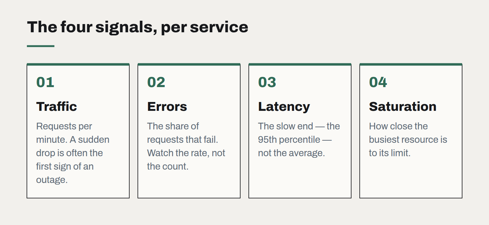

Observability for teams of five
You do not need a platform team to know what your software is doing in production. Four signals, one dashboard and a rule about alerts will cover most of what a small team needs.

The observability industry is built for large engineering organisations: distributed tracing across hundreds of services, petabytes of logs, dedicated teams to run it all. Small teams look at that world, conclude it is not for them, and end up with nothing — until a customer rings to say the site has been down since lunchtime.
There is a sensible middle. A team of five developers running a handful of applications can know, within a minute or two, when something is wrong and roughly where, for a modest monthly cost and a few days of setup. It comes down to four signals, one dashboard, and discipline about what is allowed to wake people up.
The four signals
For every user-facing service, measure:
- Traffic. Requests per minute. A sudden drop is often the first sign of an outage that nothing else caught.
- Errors. The share of requests that fail. Watch the rate, not the count.
- Latency. How long requests take — the slow end, not the average. The 95th percentile is where users feel pain.
- Saturation. How close the busiest resource is to its limit: database connections, memory, disk, queue depth.
These four, sometimes called the golden signals, answer the first question in any incident: is it broken, for whom, and since when.

Logs that answer questions
Most small-team logs are unstructured text written for the developer who wrote the code. Make them structured — one JSON object per event, with consistent fields such as request ID, user or tenant, route and duration. Send them to one place with a retention period that fits your needs and budget. When something goes wrong, you should be able to find every log line for one failing request in a single search.
Tracing is worth adding once requests cross more than two or three services. Open standards such as OpenTelemetry mean the instrumentation you add now will work with whatever tool you choose later.
One dashboard, and alerts that mean something
Put the four signals for every service on a single screen. That is the dashboard the team opens when someone says "the site feels slow".
Then be ruthless about alerts. The rule we use: an alert that pages a person must mean a customer is affected now, and must say what to check first. Everything else — a disk at 70 percent, a slow background job — goes to a channel people read during working hours. Teams that page on everything learn to ignore pages, which is worse than having none.
Also measure from outside
Add a simple external check that loads your key pages and completes one important journey — sign in, search, submit a form — every few minutes from outside your own infrastructure. It will catch the failures that your internal metrics cannot see: an expired certificate, a DNS mistake, a broken third-party script.
Start with the next incident
If you have none of this today, don't try to build it all at once. After the next incident, write down which question took longest to answer, and instrument that first. Within a few months the gaps close themselves, guided by the problems you actually have.
Choosing a frontend framework is mostly choosing a team
The technical differences between mainstream frameworks have narrowed. What still differs is who you can hire, how long the code will be supported, and how much of it you actually need.
Static first: why our own site ships as plain files
No server, no database, no framework runtime — and pages that load before you finish blinking. Static generation is the most underrated architecture for most business websites.
Postgres is the default database, and it should be
Documents, search, queues, vectors for AI retrieval — one well-run Postgres now covers what used to take four products. The reasons to add a second database are fewer than they were.